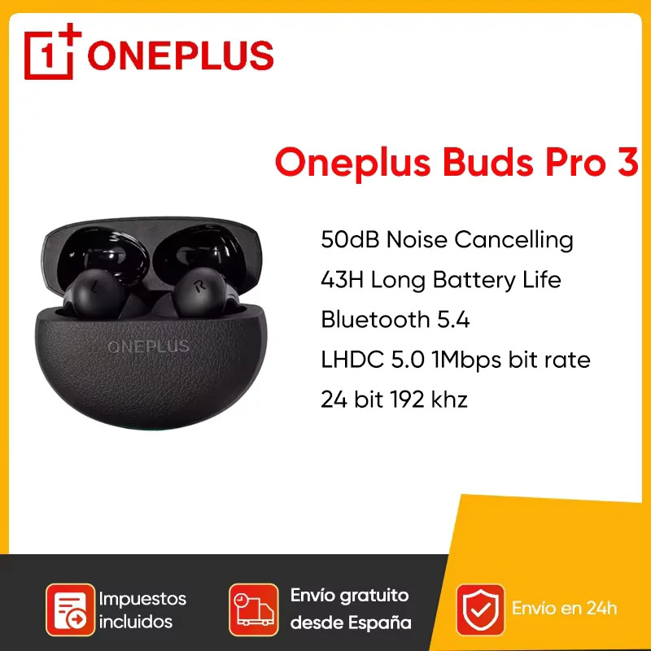
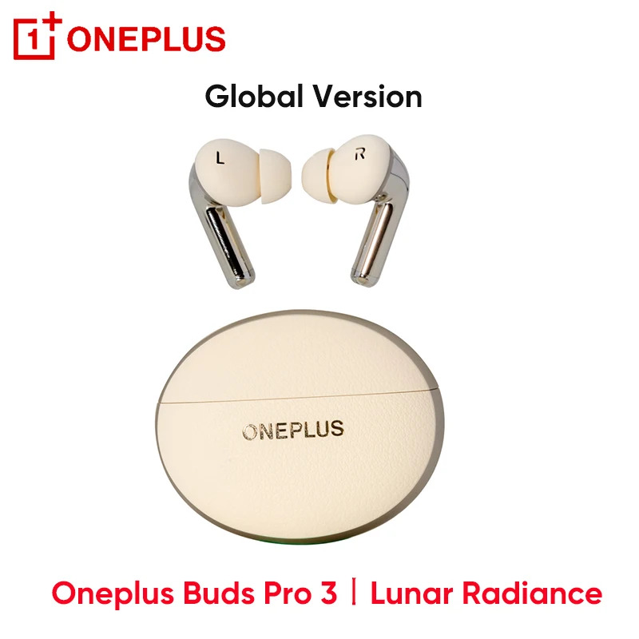
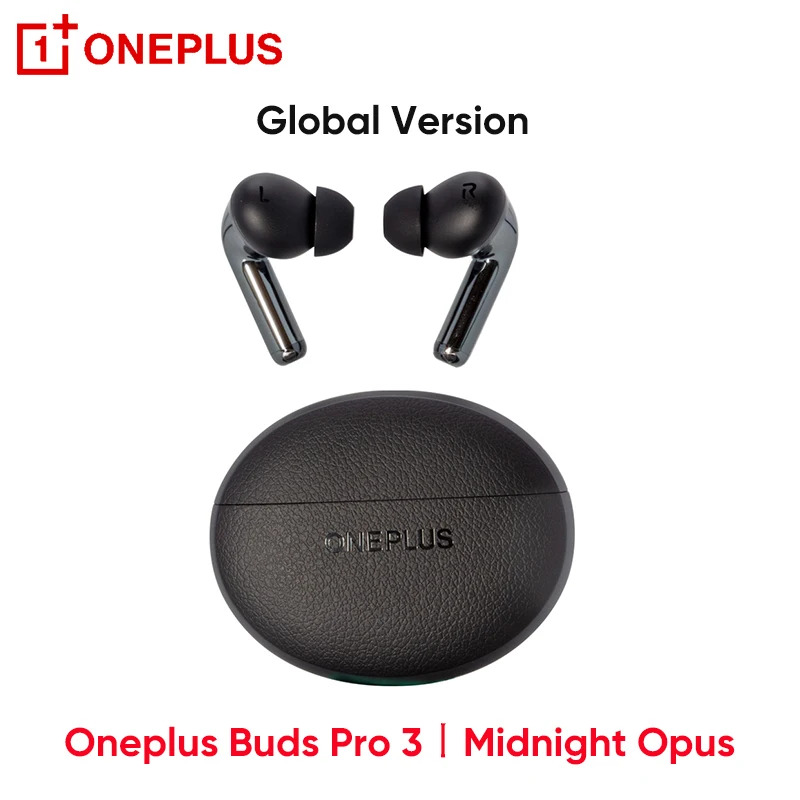

OnePlus Buds 3 Pro vs Samsung Galaxy Buds 3
Complete 2025 Comparison Review | Premium vs Standard - Which Should You Choose?
🎯 Quick Summary
Comparing the premium OnePlus Buds 3 Pro (now on sale for $107 USD - 60% off!) against the standard Samsung Galaxy Buds 3 at $115 USD. This detailed review helps you decide between premium features and balanced performance for your audio needs.
OnePlus Buds 3 Pro



- Driver Size11mm Dynamic
- Battery Life10h + 38h Case
- ANCUp to 49dB
- Codec SupportLDAC, AAC, SBC
- Water ResistanceIP55
- Fast Charging10min = 5h
Samsung Galaxy Buds 3


- Driver Size11mm Dynamic
- Battery Life6h + 24h Case
- ANCAdaptive ANC
- Codec SupportSamsung Seamless, AAC, SBC
- Water ResistanceIP57
- Fast Charging5min = 1h
📹 Watch Our Detailed Video Comparison
Main Comparison: Watch our comprehensive OnePlus Buds Pro 3 Review, testing covering sound quality, features, and real-world performance.
🆚 Samsung Galaxy Buds 3 vs Buds 3 Pro Explained
Understanding the Difference: Learn why we're comparing the standard Galaxy Buds 3 (not Pro) and what features you get at each price point.
🎵 Sound Quality & Performance Battle
OnePlus Buds 3 Pro delivers flagship audio with its 11mm dynamic drivers and LDAC codec support, providing Hi-Res audio quality that rivals earbuds costing twice as much. The sound signature features deep, controlled bass, crystal-clear mids, and sparkling highs - perfect for audiophiles and music enthusiasts.
Samsung Galaxy Buds 3 (Standard) offers Samsung's refined sound tuning with solid performance for everyday listening. While lacking the Pro's advanced drivers, it still delivers balanced audio with good bass response and clear vocals, making it excellent for calls, podcasts, and casual music listening.
Winner: OnePlus Buds 3 Pro for pure audio quality, especially with Hi-Res music sources.
🔇 Noise Cancellation Showdown
This is where the OnePlus Buds 3 Pro truly shines with up to 49dB of active noise cancellation - among the best in its class. It effectively blocks airplane engines, traffic noise, and office chatter, making it ideal for commuters and frequent travelers.
Samsung Galaxy Buds 3 features basic ANC that handles moderate noise levels adequately. While not as powerful as the OnePlus Pro model, it still provides useful noise reduction for daily activities and maintains better ambient awareness when needed.
Winner: OnePlus Buds 3 Pro by a significant margin for serious noise cancellation needs.
🔋 Battery Life Championship
OnePlus Buds 3 Pro dominates with an impressive 10 hours of continuous playback plus 38 additional hours from the charging case, totaling 48 hours. The 10-minute quick charge provides 5 hours of playback - perfect for last-minute charging before long trips.
Samsung Galaxy Buds 3 provides 6 hours of playback plus 24 hours from the case (30 hours total) - respectable but significantly less than the OnePlus. However, it charges quickly and is sufficient for most daily usage patterns.
Winner: OnePlus Buds 3 Pro with 60% more total battery life.
📱 Smart Features & Ecosystem
OnePlus Buds 3 Pro excels with dual-device connectivity, customizable touch controls via HeyMelody app, and seamless integration with OnePlus and Android devices. The LDAC support ensures maximum audio quality with compatible devices.
Samsung Galaxy Buds 3 offers excellent Samsung Galaxy integration with features like Bixby voice assistant, seamless device switching within the Samsung ecosystem, and Galaxy Wearable app customization. It also maintains good compatibility with other Android devices and iPhones.
Winner: Depends on your ecosystem - Samsung for Galaxy users, OnePlus for broader Android compatibility.
✅ OnePlus Buds 3 Pro Advantages
- Superior 49dB ANC performance
- Exceptional 48-hour total battery life
- LDAC codec for Hi-Res audio
- Excellent build quality and comfort
- Fast 10-minute charging
- Great value for premium features
⚠️ OnePlus Buds 3 Pro Considerations
- Limited ecosystem integration outside OnePlus
- Larger case size
- Touch controls can be sensitive
- No wireless charging in base model
✅ Samsung Galaxy Buds 3 Advantages
- Excellent Samsung ecosystem integration
- Adaptive sound technology
- Premium build quality
- Better water resistance (IP57)
- Compact, portable case
- Wide device compatibility
⚠️ Samsung Galaxy Buds 3 Considerations
- Shorter battery life than OnePlus
- Less aggressive ANC
- No LDAC codec support
- Higher price in some regions
🏆 Who Should Choose Which?
Choose OnePlus Buds 3 Pro if:
- You prioritize maximum battery life and ANC performance
- You're an audiophile who values Hi-Res audio (LDAC)
- You need earbuds for long flights or commutes
- You want premium features at competitive pricing
Choose Samsung Galaxy Buds 3 if:
- You're deep in the Samsung ecosystem
- You prefer adaptive, intelligent audio features
- You want excellent water resistance for workouts
- You value compact design and portability
🎯 Final Verdict
This is a premium vs standard comparison: The OnePlus Buds 3 Pro at $107 USD (60% off!) offers flagship features at an incredible value, while the Samsung Galaxy Buds 3 at $115 USD provides solid standard performance with excellent build quality.
The OnePlus Buds 3 Pro currently offers exceptional value - you're getting premium features (superior ANC, longer battery, Hi-Res audio) for less money than the standard Samsung model. However, Samsung excels in ecosystem integration and brand reliability.
Bottom line: If you want the best features and value, grab the OnePlus Pro while it's on sale. If you prioritize Samsung ecosystem integration and prefer a more conservative choice, the Galaxy Buds 3 won't disappoint.
💡 Still Undecided? Here's Our Recommendation
Go with OnePlus Buds 3 Pro if: You want the absolute best value right now. At 60% off, you're getting premium features for less than the standard Samsung model - this deal won't last forever!
Choose Samsung Galaxy Buds 3 if: You're heavily invested in the Samsung ecosystem or prefer buying from established mainstream brands. You'll still get excellent quality and reliability.